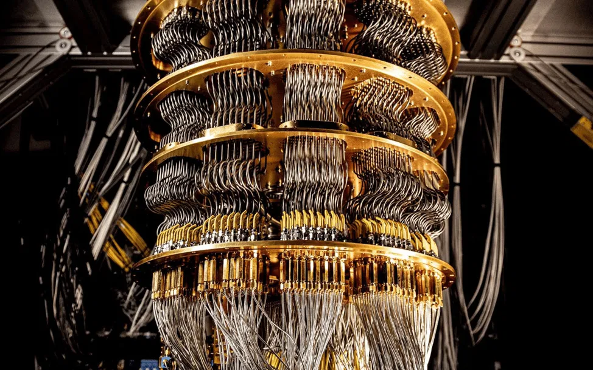
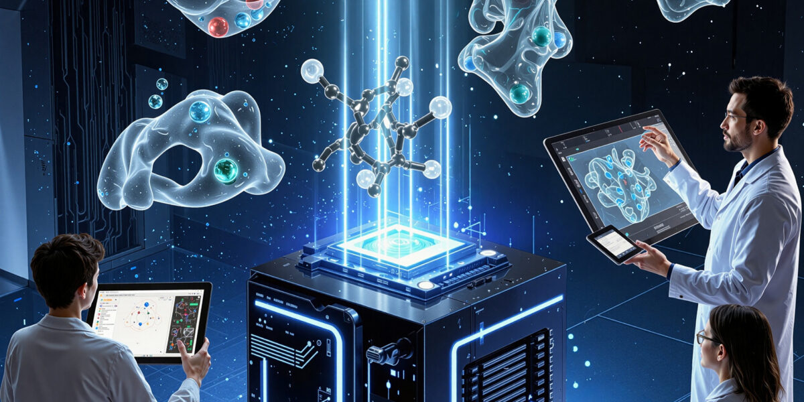

Несмотря на все сложности, ведущие мировые корпорации и научные центры уже достигли определенных успехов. Уже существуют прототипы квантовых процессоров, способные выполнять узкоспециализированные вычисления в миллионы раз быстрее классических аналогов. Это явление получило название квантовое превосходство.
|
 МатериаловедениеКвантовые компьютеры обладают огромным потенциалом для вычислений с использованием новых алгоритмов и обработки объемов данных, значительно превышающих возможности современных суперкомпьютеров. Подробно |
 ФармацевтикаФармацевтика - одна из тех индустрий, где на квантовые компьютеры с их сверхвысокой скоростью вычислений возлагают большие надежды Подробно |
В будущем квантовые вычисления могут произвести настоящую революцию во многих средах. Например:
Вполне возможно, что через пару десятилетий квантовые компьютеры станут доступны не только ученым, но и обычным пользователям через облачные сервисы.